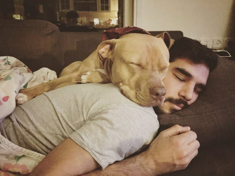

HOME
Others
Food - Burger
Food - Chicken
Place - Park
Place - Beach
Hobbies - Fetch
Hobbies - Cuddles
And My most favorite is to Cuddle ^.^

More Article
Why Do Dogs Like to Cuddle? - Puppy Leaks
7 signs that your dog really loves you
The Science Behind Why Dogs Cuddle